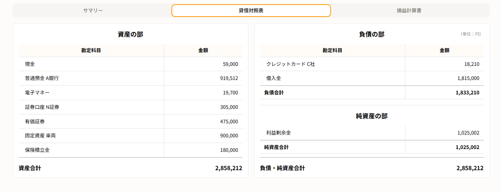
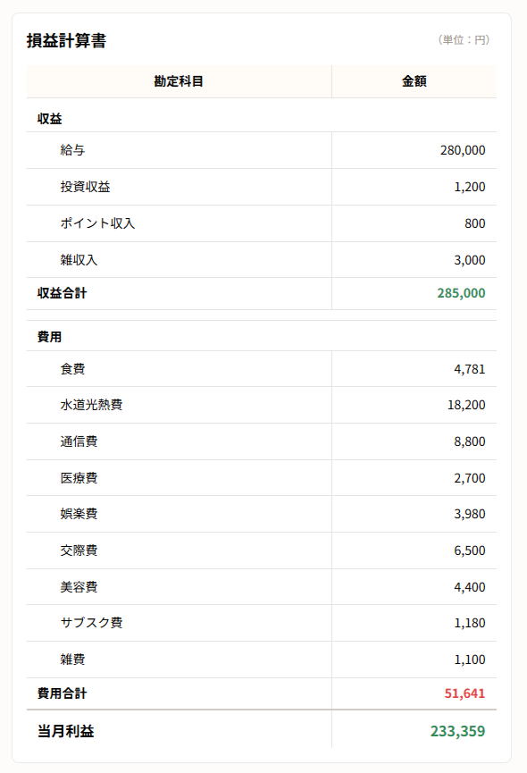

奨学金や住宅ローンも残っているため、実質的に資産が増えているのか分かりません。
家計簿をつけているのに、
本当に資産が増えているか分からない。
一般的な家計簿の場合...
1月に使ったクレジットカードの利用分が、引き落とされた2月の支出として反映されてしまう。
売ればお金になるマイホームや車も、普通の家計簿では資産の金額として記録できない。
一般的な家計簿アプリは、今月いくら使ったか、何にお金を使ったかを確認するには便利です。
しかし、現金・預金・株式・マイホーム・車・クレジットカード・ローンなどを、あなたが持っている資産と、これから支払わなければならない負債に分けて、まとめて把握することはできません。
もちろん、支出を分析することも大切です。でも、もっと大切なのは、資産と負債を差し引いた実質的な資産である「純資産」が、どのように変化しているかを把握することではないでしょうか。
BS家計簿なら、あなたの家計の純資産が分かります
家計管理に複式簿記の考え方を取り入れています。
複式簿記で記録することで、損益計算書と貸借対照表を自動で作成。
毎月の収支だけでなく、資産・負債・純資産の変化まで確認できます。
主な特徴
会計ソフト並みに最適化された入力方式
数ある会計ソフトを参考に、入力のしやすさを追求しました。振替伝票・仕訳帳・簡単入力に加え、仕訳辞書機能やCSV読み取り機能で、効率よく記録できます。
家計簿を、会社の帳票レベルで作成
入力した仕訳から、貸借対照表と損益計算書を自動で作成。一般的な家計簿では見えにくい、家計の全体像を数字で確認できます。


オンラインで、どこでも入力
スマホ・タブレット・PCのブラウザから、いつでも家計簿を入力できます。入力したデータはオンラインに保存されるため、端末が変わっても同じ家計簿を確認できます。
機能一覧
複式簿記で家計を続けるための主な機能です。
仕訳入力
入力補助・CSV取込
貸借対照表・損益計算書
円グラフで内訳を確認
期間選択・年間集計
仕訳帳と検索
カレンダー表示
科目・カラーを編集
オンライン保存
こんな方におすすめです
収支だけではなく、家計の全体像まで把握したい方に向いています。
収支だけでは物足りない
普通の家計簿アプリで、収支しか見えないことに不満がある方へ
BS家計簿なら貸借対照表まで確認できるので、現金や預金だけでなく、投資・ローン・クレジットカードまで含めて家計を見られます。
簿記を暮らしに活かしたい
簿記を勉強したけれど、日常で活かす場面が少ない方へ
借方・貸方、資産・負債・純資産の考え方を、毎日の家計管理でそのまま使えます。
ユーザーの声
30代・男性
「今月いくら使ったかだけでなく、純資産が増えているのかまで見られるのがいいです。家計の状態を数字で判断できるようになりました。」
40代・男性
「投資やローン返済をただの支出にしなくていいのがしっくりきます。会計ソフトに近い入力なのに、家計用として使いやすいです。」
20代・女性
「簿記を勉強したものの、日常で活かす場面があまりありませんでした。借方・貸方の考え方を家計で使えるのは思った以上に身近です。」
開発者メッセージ
会計ソフトを使ってきた経験を、家計簿へ。
開発者自身も、複式簿記の考え方で家計を管理してきました。仕事柄、個人向けから業務向けまで10種類以上の会計ソフトを使ってきた経験をもとに、資産・負債・純資産まで正確に把握でき、日々の入力も続けやすい家計簿としてBS家計簿を開発しました。
料金
まずは無料で、家計を資産・負債・純資産で見る体験から始められます。
今ならProプランを1か月無料体験できます
補助科目やCSV・PDFエクスポートなど、有料機能まで試してから選べます。
| 機能 | 無料 | Pro（月額）¥480 / 月 | Pro（年額）¥4,800 / 年月額払いより年間¥960お得 |
|---|---|---|---|
| 基本入力 振替伝票入力・仕訳帳入力・簡単入力 | ○ | ○ | ○ |
| 直前仕訳入力 | - | ○ | ○ |
| 仕訳辞書機能 | - | ○ | ○ |
| CSV取り込み入力 | - | ○ | ○ |
| 貸借対照表・損益計算書の表示 | ○ | ○ | ○ |
| 閲覧期間 | 全期間 | 全期間 | 全期間 |
| 勘定科目数 | 40件まで | 無制限 | 無制限 |
| 補助科目機能 | × | 無制限 | 無制限 |
| 前年同期対比 | - | ○ | ○ |
| CSV・PDFエクスポート | - | ○ | ○ |
無料版でも、基本入力や貸借対照表・損益計算書の確認まで使えます。 今ならProプランも1か月無料で体験できます。
無料登録価格は税込です。内容は今後変更される場合があります。
FAQ
簿記がわからなくても使えますか？
使えます。ただし、複式簿記の考え方を理解している方が、より便利に使えます。
スマホでも使えますか？
はい。スマホ、タブレット、PCのブラウザから利用できます。日々の入力はスマホ、月次確認はPCで行う使い方を想定しています。
無料で使えますか？
はい。無料プランから利用できます。より本格的に管理したい方向けに、Proプランを用意する予定です。
他の家計簿アプリと何が違いますか？
一般的な家計簿アプリは支出管理が中心です。BS家計簿は、複式簿記の考え方で、資産・負債・純資産まで管理できる点が特徴です。
クレジットカードやローンも管理できますか？
はい。クレジットカード未払金やローン残高も、負債として管理できます。
データのエクスポートはできますか？
ProプランでCSVエクスポート機能を提供予定です。
今後スマホアプリ版は出ますか？
まずはWebアプリとして提供します。スマホアプリ版については、利用状況を見ながら検討します。